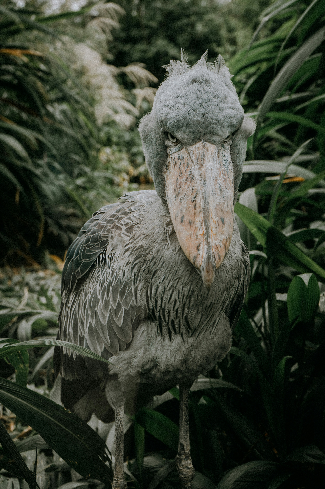
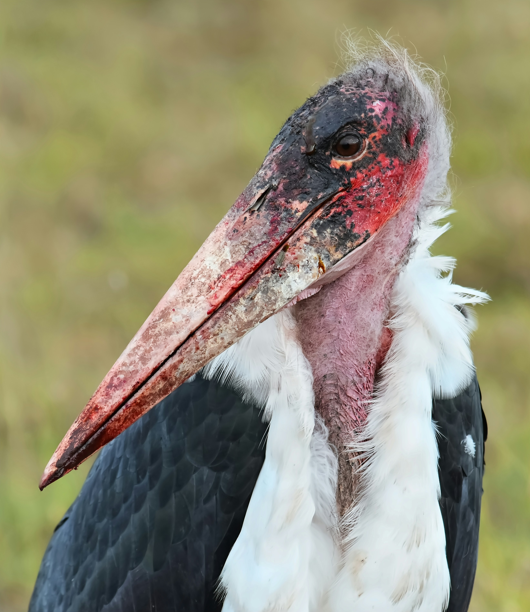
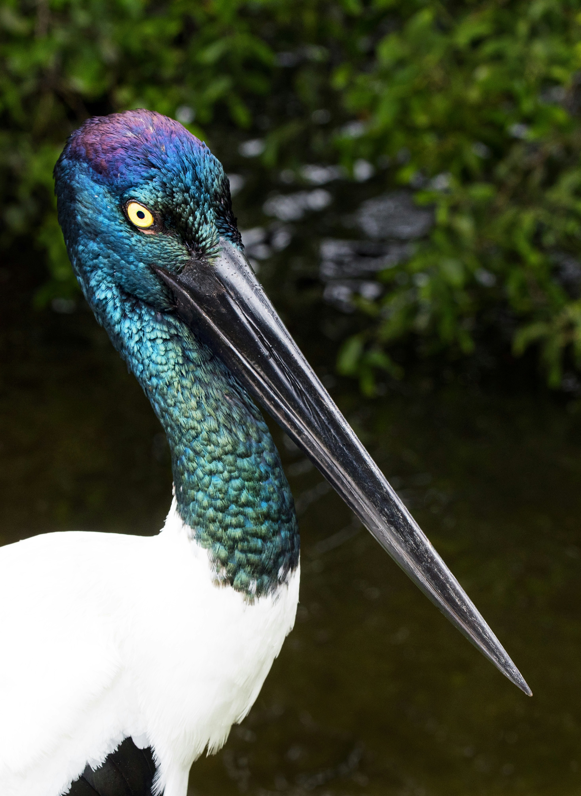

Habitat:
Freshwater swamps and marshes in central and eastern Africa.
Diet:
Mainly lungfish, catfish, frogs, and water snakes.
Behavior:
Often stands completely still for long periods before striking at prey with its massive bill.
The shoebill (Balaeniceps rex), also known as the whale-headed stork, whalebill, and shoe-billed stork, is a large long-legged wading bird. It is named for its enormous, shoe-shaped bill. It has a somewhat stork-like overall form and was previously classified as a stork in the order Ciconiiformes, but genetic evidence has now placed it along with pelicans, herons, and its closest relative, the hamerkop, all in the order Pelecaniformes. Adults are mainly grey, while juveniles are browner. It lives in tropical East Africa in large swamps from South Sudan down to Zambia.

Habitat:
Savannas, wetlands, and areas near human settlements in sub-Saharan Africa.
Diet:
Primarily scavenges dead animals but also eats fish, insects, and small mammals.
Behavior:
Often feeds alongside vultures and uses warm air currents to soar with little effort.
The marabou stork (Leptoptilos crumenifer) is a large wading bird in the stork family Ciconiidae native to sub-Saharan Africa. It breeds in both wet and arid habitats, often near human habitation, especially landfill sites. It is sometimes called the "undertaker bird" due to its shape from behind: cloak-like wings and back, skinny white legs, and sometimes a large white mass of "hair".[2][better source needed] It has often been credited with the largest wingspan of any land bird, with an average of 2.6 metres (8.5 ft) and some recorded examples of up to 3.2 metres (10 ft).[3]

Habitat:
Wetlands, marshes, and flooded grasslands throughout Central and South America.
Diet:
Primarily fish, amphibians, mollusks, and small reptiles.
Behavior:
Wades through shallow water, using its large bill to detect and catch prey.
The jabiru (/ˌdʒæbɪˈruː/ or /ˈdʒæbɪruː/; Jabiru mycteria) is a large stork found in the Americas from Mexico to Argentina, except west of the Andes. The only member of the genus of the same name, it is most common in the Pantanal region of Brazil and the eastern Paraguayan Chaco. It sometimes wanders into the United States, usually in Texas, but also reportedly in Mississippi, Oklahoma and Louisiana.[3][4] The name comes from the Tupi–Guaraní languages and means 'swollen neck'.[5]